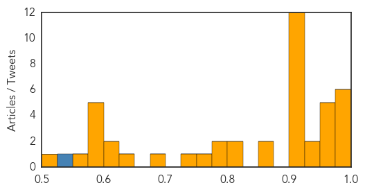

Unknown
30-Day Web Trend
0 alerts, 0 warnings

30-Day Twitter Trend
0 alerts, 0 warnings

Article Locations


Article Confidences
Top Articles:
- 0.996
- Ohio sees another spike in flu hospitalizations
- 0.993
- Flu deaths in North Carolina reach 17; doctors predict harsh season
- 0.993
- Health officials report 36 flu-related deaths in Indiana
- 0.980
- KSLA News 12 Shreveport, Louisiana News Weather & Sports
- 0.978
- Significant flu activity in Alabama
- 0.977
- Ohio flu hospitalizations 7 times higher this year than last
- 0.974
- Flu cases in Ohio are swamping hospitals, which are urging people to avoid ERs if possible
- 0.961
- The difference between the flu and a stomach bug
- 0.957
- Novant Health restricting access to hospitals, including Thomasville
- 0.957
- Pulaski County Schools proactive against spreading the flu
- 0.956
- Hospitals ask sick visitors to stay away
- 0.944
- Salem Hospital asks possible flu carriers to avoid visiting
- 0.930
- Shreveport listed as second sickest city this flu season
- 0.921
- Nationwide caramel apple warning issued
- 0.917
- Chicago Tribune
- 0.917
- Chicago Tribune
- 0.917
- Chicago Tribune
- 0.917
- Chicago Tribune
- 0.917
- Chicago Tribune
- 0.917
- Chicago Tribune
- 0.917
- Chicago Tribune
- 0.917
- Chicago Tribune
- 0.917
- Chicago Tribune
- 0.917
- Chicago Tribune
- 0.917
- Chicago Tribune
- 0.866
- Fire at oil tanks at Libya's Es Sider port extinguished -official
- 0.856
- Biloxi pharmacy offers free flu vaccines
- 0.808
- West Texas News
- 0.808
- West Texas News
- 0.785
- KFVS12 News & Weather Cape Girardeau, Carbondale, Poplar Bluff
- 0.785
- KFVS12 News & Weather Cape Girardeau, Carbondale, Poplar Bluff
- 0.757
- What you don't know about RSV could hurt your baby - Columbia Daily Tribune
- 0.729
- Grand Junction hospital limits visitors due to flu
- 0.688
- Churrascaria Aveirense Restaurant Closed After Salmonella Outbreak
- 0.626
- Dad says 6-year-old son with flu died in his arms at hospital waiting for treatment
- 0.609
- Grand Junction hospital limits visitors due to flu
- 0.604
- Recovery teams narrow AirAsia crash search area
- 0.597
- Photos: Treasure trove of rare autos found in France
- 0.597
- Palestinians submit request to join ICC
- 0.597
- Rescue teams reach migrant ship off Italian coast
- 0.597
- France 'backed Palestinians in UN Security Council to prevent ICC bid'
- 0.597
- Bad luck, not lifestyle or genes, to blame for most cancers
- 0.559
- Terry White Chemists Metformin (metformin hydrochloride) Drug
- 0.523
- Water, improved sanitation needed for preventing maternal deaths in developing nations
Top Tweets:
- 0.537
- If u have flu and have diabetes lung disease heart disease (other than hypertension) or other chronic illness see MD re antiviral meds.
Swine Flu
30-Day Web Trend
9 alerts, 0 warnings

30-Day Twitter Trend
1 alerts, 0 warnings

Article Locations


Article Confidences

Top Articles:
- 1.000
- IMA Issues Guidelines as 2 Fresh Cases of Swine Flu Reported in Delhi
- 1.000
- 2 fresh cases of swine flu in Delhi, 88 infected in Telangana and Andhra last year : India, News
- 0.999
- Symptom of swine flu could be minor fever with breathlessness, says IMA
- 0.999
- No need to panic, monitoring the situation
- 0.997
- Swine flu deaths in Dec raise alarm in Telangana
- 0.996
- Health department monitoring spread of swine flu, says JP Nadda, Video Gallery
- 0.988
- Flu vaccine may not help this season
- 0.972
- Workers to be trained to handle swine flu cases in Delhi
- 0.956
- Two fresh cases of swine flu reported in Delhi
- 0.942
- Hospitals well-equipped to handle swine flu cases: Nadda
- 0.939
- 2 more swine flu cases
Top Tweets:
-
No tweets found for Jan 02, 2015